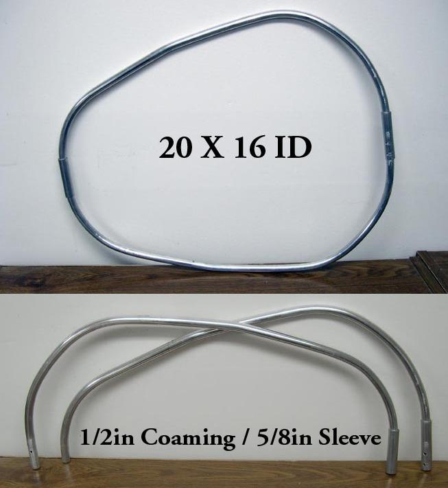

| Aluminum / Freestanding Coaming (1 of 6) | Menu Previous Page Next Page |
|

This 1/2" aluminum take-apart coaming will be retro-fitted to the Sea Rider with a glued PVC sleeve. The tubing was shaped using an inexpensive tube bender.
A small 5/8" sleeve connects the two sides of the coaming.
Note: 1/4" inserts work better than the 5/8" sleeves, but I was out of 1/4" rod at the time I constucted the coaming. |
|